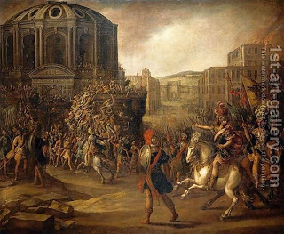

Avodah Zarah 9 - How the Romans Vanquished the Greeks
Kratesis is the third festival subject to a three-day commerce restriction, and it celebrated Rome seizing sovereignty. Actually, there were two victories, one in the time of Cleopatra, and before that, against the Greeks.
The Romans fought thirty-two battles against the Greeks but were unable to overcome them, until they accepted Israel as a partner. They then sent a message to the Greeks: "Until now we were fighting with weapons, but now let's reason. If one has a carbuncle and a Torah scroll, which one should be made into a setting for the other?" The Greeks replied, "The carbuncle should be the setting for the Torah scroll." The Romans then replied, "If so, we have a Torah scroll with us, for Israel is with us." Then they went ahead and defeated the Greeks.
The Romans promised to treat Israel as partners, but after twenty-six years, they subjugated Israel. What was their logic? At first they relied on " I will proceed alongside you ," implying partnership between Esau (Rome) and Jacob. But later they expounded " Let my master go ahead of his servant ," which indicates that Esau (Rome) is the leader.
Art: Juan De La Corte - Battle Scene with a Roman Army Besieging a Large City